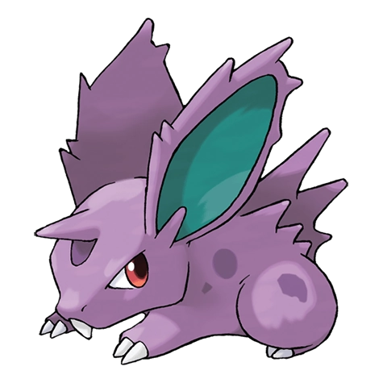

Назад
Нидоран

Нидоран — Покемон 1 поколения под номером 32 в Покедекс. Обитает он в регионе Канто и относится к Ядовитому типу. У Нидорана развитые мускулы, обеспечивающие движение ушей. Уши этого Покемона свободно двигаются в любом направлении. Даже малейший звук не ускользает от его внимания.
Тип:
Ядовитый
Эволюция
# 032 Нидоран
=>
# 033 Нидорино